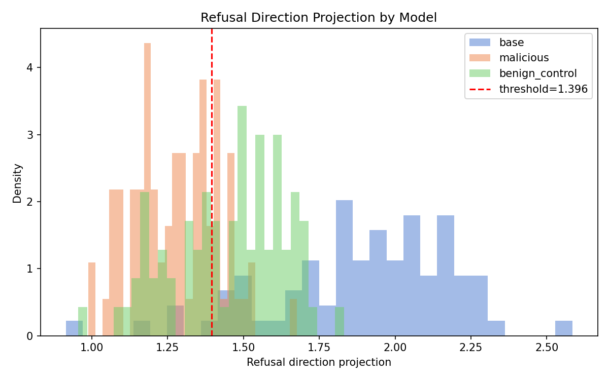

The lifecycle
locate → attack → break → detect, on Llama-3.1-8B
In plain terms: First we measure how often the model refuses harmful prompts (it should be high) and how often it wrongly refuses safe ones (should be near zero). Then we try to jailbreak it three ways and rank them. We find the single "refusal dial" and switch it off. We secretly retrain the model to never refuse, then check whether a detector reading its internal signals can catch that tampering.
Higher = the attack more often gets the model to comply. Discrete text jailbreaks (GCG) are weak here; relaxing the attack toward the model's internals works better. The Vicuna bar is a control on a weaker model, proving the attack code works.
AUROC is "how well can you tell two groups apart," 0.5 = coin flip, 1.0 = perfect. The detector spots the refusal-removed model well (0.956). Reading the prompt alone (last-token) is useless (0.50): the model decides to refuse while answering, not while reading.

Generalization
does the method transfer?
In plain terms: One result could be a fluke. So we run the same recipe on a different model, on harmful requests hidden inside images, and on a different hidden behaviour (a model that deliberately plays dumb). If the method keeps working, the mechanism is real, not an accident of one setup.
Robustness
does the method survive scrutiny?
In plain terms: We stress-test the findings. Is refusal really one dial or a few? Is the detector a genuine handle on the behaviour or just a correlation? Can a clever attacker who knows about the detector slip past it? Can the damage be undone? The honest answers are here.
One direction alone is weak (k=1). Adding a few more captures refusal fast, so refusal is a small handful of directions, not exactly one, but close.
Several probes look great at telling refusal apart (blue). But only the unsupervised diff-of-means probe actually controls refusal when you remove it (orange). Looking right isn't the same as being the real cause.
Even the best single interpretable feature only weakly matches the refusal direction (~0.31). Refusal is spread across many features, so the simple diff-of-means direction is the more efficient handle.
Threat breadth
does the detector reach other covert tampers?
In plain terms: The same detector, unchanged, is pointed at other kinds of hidden sabotage: a model quietly turned broadly harmful, a "sleeper agent" that only misbehaves on a secret trigger word, a model that lies strategically, and refusal happening inside a reasoning model's private thoughts. It catches them too.
One detector, four different hidden tampers. Above 0.5 means it separates the tampered model from a clean one; near 1.0 is near-perfect.
Concepts & methods
what each paper and technique actually does, in plain terms
In plain terms: Every result above rests on one of the methods below. This is a glossary: what the technique is, why it matters here, and a link to the paper that introduced it. Skim it if a term above was unfamiliar.
Sources & further reading
the papers this work replicates and extends
In plain terms: This project stands on published research. Below are the original papers (free on arXiv), the full code, and the write-up. Start with Arditi et al. for the "refusal is one direction" idea.